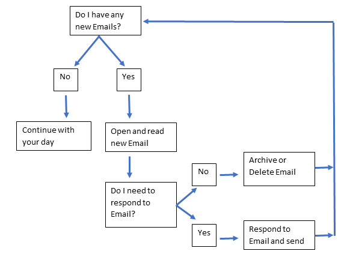
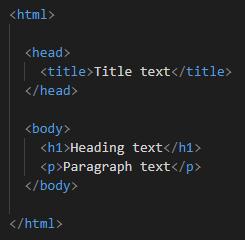
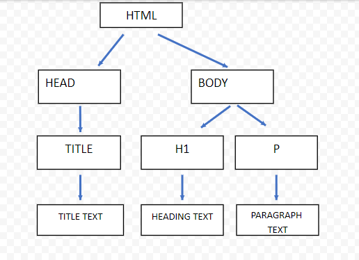

Imagine that HTML is a tree. All trees share the same anatomy- roots, a trunk, branches and twigs.
CSS displays how the tree looks. How big it is, the leaf colour and shape, the type of flowers or fruit etc. CSS makes the tree beautiful and unique.
JavaScript (JS) is what manipulates the tree. If a bee pollunates a flower, the flower turns to fruit. If it is Autumn, the leaves fall off. If it is Spring, new leaves and flowers will grow.
Control Flow in JavaScript (JS) is the order that the computer reads and applies the information, which defaults as top to bottom, left to right. However, a loop can change the flow.
A Loop is like looking at your phone to see if you have any new emails.
You continue the loop until there are no new emails in your inbox.
An Array stores data as either a string: 'name', number: 123, or Boolean: true/false.
When indexing arrays, the first item in the list is 0 (not 1 -which is where we would normally start counting from). For example:
Let drinkOptions = ['coffee', 'water', 'juice', 'wine']
In this string, coffee is indexed as 0, water is 1, juice is 2 etc. To find out how many items are in the array, I would use:
drinkOptions.length
// will return 4
To access an item in an array through referencing the index, I would use:
console.log(I'm dying for a big glass of [3]!)
// will return 'I'm dying for a big glass of wine!'
An Object stores data inside a variable and uses key:'value' pairs. For example:
Let drinkOption = {
Morning: 'coffee',
Lunch: 'water',
Afternoon: 'juice',
Evening: 'wine',
}
To access information from an object, we use dot notation (example 1) or with square brackets (example 2)
drinkOption.Morning
// will return coffee
drinkOption[Lunch]
// will return water
A Function is a block of code that is used to perform a specific task. For the task to be executed, you need to 'call' the function.
Function()
Functions are helpful because if you are using that block of code over and over throughout your programming, you can call on it again, instead of having to write it out each time. This helps make the code easy to read without any extra clutter.
The Document Object Model (DOM) is a programming interface, which means that by using the DOM, we can interact with web pages by adding, deleting or changing content on a HTML document. The HTML document can be viewed as either a webpage in a browser window or as the HTML source, like below:
All the elements in the above HTML document is an object when it comes to the DOM (the head, body, h1 and p are all objects). JavaScript works with objects. Therefore, this means that with the help of the DOM, the HTML document and JavaScript can now communicate together.
The DOM represents the content in the HTML document as a tree structure. Like below:
Everything branching off the HTML document is called a node. With the use of DevTools, we are able to view the DOM in our browser window, and have the ability to take any of the nodes and easily read, access and update the contents of the document without having to refresh the webpage.